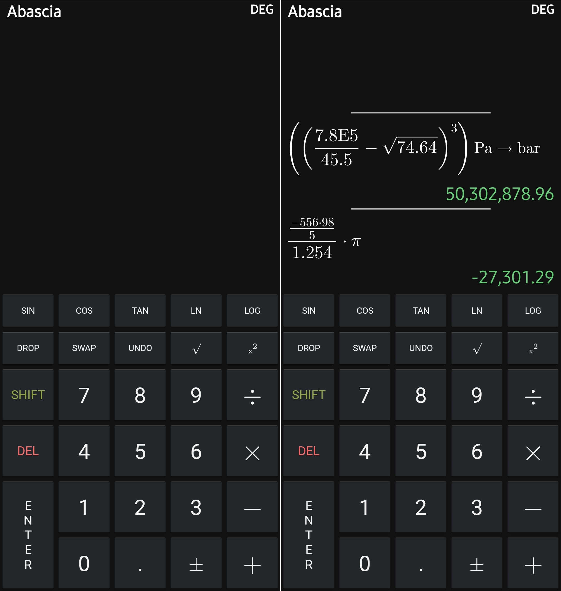

Abascia is an RPN-based android calculator for everyday tasks.
Why another RPN calculator?
One crucial feature I've seen that is absent from almost all other RPN calculators1 (dealbreaker for me personally) is the ability to see the history of calculations -- what pieces is the final answer composed of.
Without it, there's no way to check if the result is free from any mistakes while calculating the answer. At least an algebraic calculator will let you see this history, even if it's limited to only one calculation at any time.
This calculator combines the efficiency and intuitiveness of RPN, and the display/outputs of an algebraic calculator.
Downloads
Screenshots
